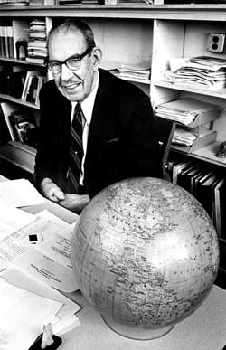

Lab History
Established in 1953 by Arthur H. Robinson, the Cartography Lab has created virtually every kind and size of map, for a wide variety of academic, commercial, and individual customers.
Robinson demonstrated an aptitude for cartography and began drawing maps for faculty textbooks while earning a master's degree in geography from the University of Wisconsin-Madison and a doctorate from Ohio State.
Recruited for the Office of Strategic Services in 1941, Robinson headed its map division throughout World War II, overseeing the drawing of about 5,000 maps for the military. At war's end, he joined the University of Wisconsin-Madison faculty, where he taught at Science Hall until his retirement in 1980.
Arthur H. Robinson is perhaps best known to the public as the creator of the Robinson Projection, a map projection that he referred to as "a portrait of the earth." In 1988 the National Geographic Society adopted that projection as its standard for producing world maps, followed by agencies of the U.S. Government and others worldwide.
What We Do
The Cartography Lab serves the needs of the UW system, government agencies, authors and publishers as well as many commercial clients. In addition to map products, we can provide complete graphic design services , online maps and websites, and interactive map products.
Throughout the process we will work closely with you, your publisher and your printer's requirements to meet exact specifications for the final delivery. The staff have access to the world-class resources of the Department of Geography academic staff, the Geography Library with over 50,000 volumes, and the Robinson Map Library with over 500,000 maps and aerial photographs. Geographic and map research, and large format printing are additional services that we offer.
To further investigate what we do and see examples of our work, visit our portofolio page to see the amazing work our students and staff produce.
Awards and Recognitions
The UW Cartography Lab has had many awards and recognitions throughout the years.